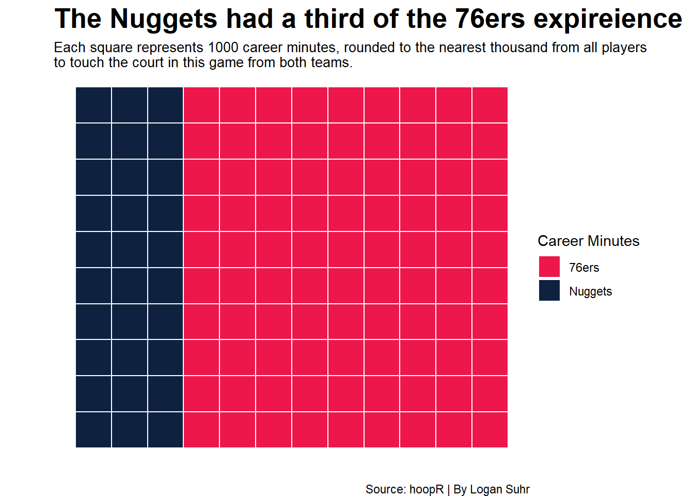
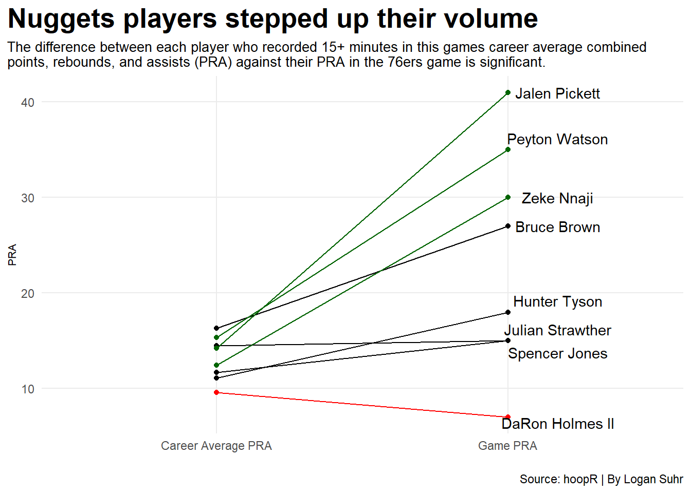
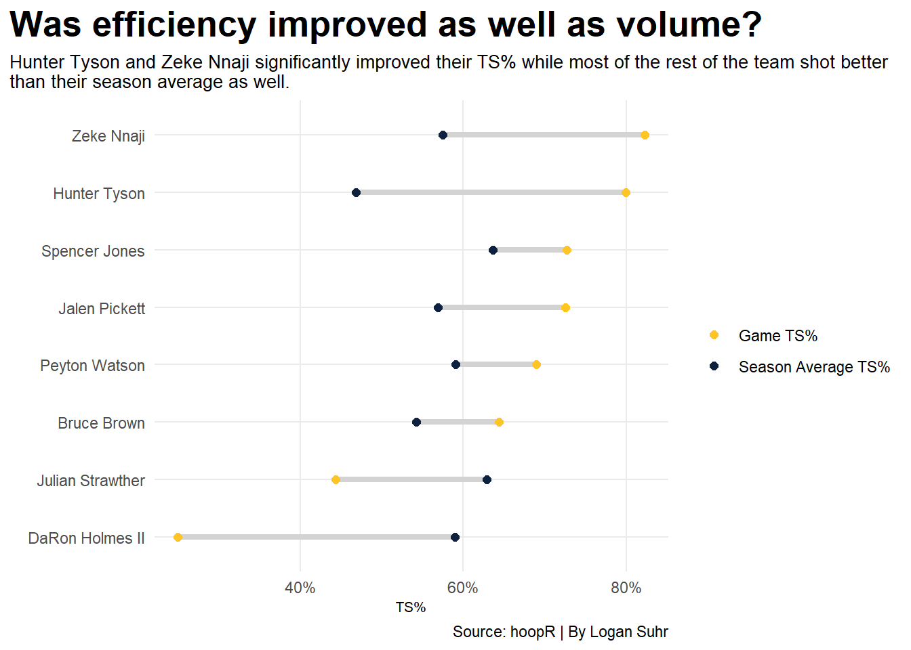

On January 5, 2026, the Denver Nuggets (24-12) beat the Philadelphia 76ers (19-15), 125-124 in overtime. While this may not seem very significant, if you look at the lineups, you may wonder how a team led by Jalen Pickett defeated a team led by Joel Embiid, who had a 32-point double-double.
The Nuggets were missing their entire usual starting five, including Nikola Jokic, Jamal Murray, Aaron Gordon, Cameron Johnson, and Christian Braun, as well as their sixth man of the year finalist, Tim Hardaway Jr. The 76ers were almost at full strength, with the only key piece they were missing being Kelly Oubre Jr. The players who did play in the game for Denver were Spencer Jones, Peyton Watson, DaRon Holmes II, Bruce Brown, Jalen Pickett, Hunter Tyson, Julian Strawther, Curtis Jones, and Zeke Nnaji. The 76ers lineup included more known players, including Joel Embiid, Paul George, Tyrese Maxey, V.J. Edgecombe, Dominick Barlow, Quentin Grimes, Adem Bona, Jabari Walker, and Jared McCain.
We are going to analyze just how little experience this Nuggets roster had, as well as how they improved their game by both volume and efficiency compared to their previous averages. We will look at the true shooting percentage (TS%), which is an advanced shooting metric to measure shooting efficiency that takes into account 2-point field goals, free throws, and puts a heavier impact on made 3-pointers.
The first thing we will look at is the difference in career minutes between the teams’ lineups.
Code
library(tidyverse)library(hoopR)library(ggrepel)newnbastats10 <-read_csv("nba2010.csv")newnbastats11 <-read_csv("nba2011.csv")newnbastats12 <-read_csv("nba2012.csv")newnbastats13 <-read_csv("nba2013.csv")newnbastats14 <-read_csv("nba2014.csv")newnbastats15 <-read_csv("nba2015.csv")newnbastats16 <-read_csv("nba2016.csv")newnbastats17 <-read_csv("nba2017.csv")newnbastats18 <-read_csv("nba2018.csv")newnbastats19 <-read_csv("nba2019.csv")newnbastats20 <-read_csv("nba2020.csv")newnbastats21 <-read_csv("nba2021.csv")newnbastats22 <-read_csv("nba2022.csv")newnbastats23 <-read_csv("nba2023.csv")newnbastats24 <-read_csv("nba2024.csv")newnbastats25 <-read_csv("nba2025.csv")newnbastats26 <-read_csv("nba2026.csv")stats10 <-read_csv("goodnewnbastats10.csv")stats11 <-read_csv("goodnewnbastats11.csv")stats12 <-read_csv("goodnewnbastats12.csv")stats13 <-read_csv("goodnewnbastats13.csv")stats14 <-read_csv("goodnewnbastats14.csv")stats16 <-read_csv("goodnewnbastats16.csv")stats17 <-read_csv("goodnewnbastats17.csv")stats18 <-read_csv("goodnewnbastats18.csv")stats19 <-read_csv("goodnewnbastats19.csv")stats <-bind_rows(stats10, stats11, stats12, stats13, stats14, newnbastats15, stats16, stats17, stats18, stats19, newnbastats20, newnbastats21, newnbastats22, newnbastats23, newnbastats24, newnbastats25, newnbastats26)nugs_six_mins <-data.frame(category =c("Nuggets", "76ers"),count =c(30, 90))rows <-10waffle_nugs_six_mins <- nugs_six_mins |>uncount(count) |>mutate(x = (row_number() -1) %/% rows +1,y = (row_number() -1) %% rows +1 )ggplot() +geom_tile(data=waffle_nugs_six_mins, aes(x = x, y = y, fill = category ), color ="white", linewidth = .5) +coord_equal() +scale_fill_manual(values =c("Nuggets"="#0E2240", "76ers"="#ED174C"), name="Career Minutes") +labs(title="The Nuggets had a third of the 76ers expireience", subtitle="Each square represents 1000 career minutes, rounded to the nearest thousand from all players \nto touch the court in this game from both teams.", y="", x ="", caption="Source: hoopR | By Logan Suhr")+theme_void() +theme(plot.title =element_text(size =20, face ="bold"),axis.title =element_text(size =8), plot.subtitle =element_text(size=10), panel.grid.minor =element_blank(),plot.title.position ="plot" )

The 76ers’ lineup had almost exactly three times the amount of career minutes as the Nuggets. Paul George himself accounted for over 30,000 of those minutes and had more career experience than the entire Nuggets lineup combined, and if you take Bruce Brown out of Denver’s lineup, they lose over a third of their total minutes, with him accounting for over 10,000. This shows how inexperienced this Nugget’s lineup was in general compared to the 76ers, who were fielding a former MVP in Joel Embiid.
So, with all of this inexperience, how did these players who usually come off of or are sitting on the bench pull off the insane upset?
Code
career_game_pra <-data.frame(athlete =c("DaRon Holmes II", "Spencer Jones", "Bruce Brown", "Jalen Pickett", "Peyton Watson", "Hunter Tyson", "Zeke Nnaji", "Julian Strawther"),career_avg_pra =c(9.57143, 11.686275, 16.314779, 14.204545, 15.367568, 11.1, 12.452830, 14.509615), game_pra =c(7, 15, 27, 41, 35, 18, 30, 15))career_game_pra_long <- career_game_pra |>pivot_longer(cols =c(career_avg_pra, game_pra),names_to ="difference", values_to ="PRA") |>mutate(difference =case_when( difference =="career_avg_pra"~"Career Average PRA", difference =="game_pra"~"Game PRA" ) )DH2 <- career_game_pra_long |>filter(athlete =="DaRon Holmes II")PJZ <- career_game_pra_long |>filter(athlete =="Zeke Nnaji"| athlete =="Peyton Watson"| athlete =="Jalen Pickett")ggplot() +geom_line(data=career_game_pra_long, aes(x=difference, y=PRA, group=athlete), color="black") +geom_point(data=career_game_pra_long, aes(x=difference, y=PRA, group=athlete), color="black") +geom_line(data=DH2, aes(x=difference, y=PRA, group=athlete), color="red") +geom_point(data=DH2, aes(x=difference, y=PRA, group=athlete), color="red") +geom_line(data=PJZ, aes(x=difference, y=PRA, group=athlete), color="darkgreen") +geom_point(data=PJZ, aes(x=difference, y=PRA, group=athlete), color="darkgreen") +geom_text_repel(data=career_game_pra_long |>filter(difference ==max(difference)), aes(x=difference, y=PRA, group=athlete, label=athlete),direction ="y", nudge_x = .170933) +labs(title="Nuggets players stepped up their volume", subtitle="The difference between each player who recorded 15+ minutes in this games career average combined \npoints, rebounds, and assists (PRA) against their PRA in the 76ers game is significant.", y="PRA", x ="", caption="Source: hoopR | By Logan Suhr")+theme_minimal() +theme(plot.title =element_text(size =20, face ="bold"),axis.title =element_text(size =8), plot.subtitle =element_text(size=10), panel.grid.minor =element_blank(),plot.title.position ="plot" )

Every player to play 15 or more minutes for the Nuggets had more combined points, rebounds, and assists then their career average besides DaRon Holmes II. The biggest riser was Jalen Pickett who had 41 and averages about 15 in his career. Other notable risers include Peyton Watson and Zeke Nnaji.
But volume isn’t everything if you are inefficient. So, how good did the Nuggets have to shoot to pull this win out?
Code
ts_pct_final <-data.frame(athlete =c("DaRon Holmes II", "Spencer Jones", "Bruce Brown", "Jalen Pickett", "Peyton Watson", "Hunter Tyson", "Zeke Nnaji", "Julian Strawther"),Season_avg_ts =c(0.5899338, 0.6368316, 0.5426759, 0.5693253, 0.5909597, 0.4684165, 0.5749541, 0.6288852), game_ts =c(0.2500000, 0.7267442, 0.6436314, 0.7250000, 0.6896552, 0.7990868, 0.8228840, 0.4437870))ggplot() +geom_segment(data=ts_pct_final, aes(y=reorder(athlete, game_ts), yend=athlete,x=game_ts, xend= Season_avg_ts),color="lightgrey",linewidth =1.5 ) +geom_point(data=ts_pct_final,aes(y=athlete,x=game_ts,color="Game TS%" ),size=2 ) +geom_point(data=ts_pct_final,aes(y=athlete,x=Season_avg_ts,color="Season Average TS%" ),size=2 ) +scale_x_continuous(labels = scales::percent) +scale_color_manual(name="", values=c("#FEC524", "#0E2240")) +labs(x="TS%", y="", title="Was efficiency improved as well as volume?", subtitle="Hunter Tyson and Zeke Nnaji significantly improved their TS% while most of the rest of the team shot better \nthan their season average as well.", caption="Source: hoopR | By Logan Suhr" ) +theme_minimal() +theme(plot.title =element_text(size =20, face ="bold"),axis.title =element_text(size =8), plot.subtitle =element_text(size=10), panel.grid.minor =element_blank(),plot.title.position ="plot" )

For true shooting percent, we keep the 15-minute or more requirement to eliminate garbage time stats, and compare this game to their season average true shooting percentage instead of their career average. Again, almost everyone had a higher true shooting percentage than their average, besides DaRon Holmes II and Julian Strawther. With the Notable risers being Zeke Nnaji and Hunter Tyson, two players who had better volume, but not by much.
The Nuggets were able to win this game by truly embracing the next man up mentality and believing in themselves. While most of these players do not usually get very much playing time, they did not let that stop them from performing to the best of their abilities and defeating a for the most part healthy playoff team with a former MVP on the floor.